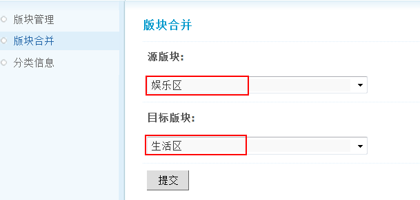
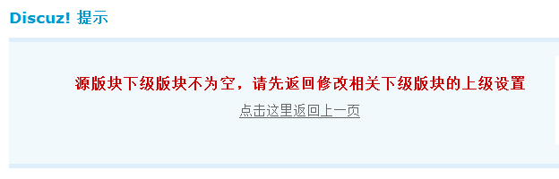

版块合并
由于业务需要，管理员可能需要合并论坛的两个版块，Discuz! 对这一功能做了很好的设置，管理员只需要选择好源版块和目标版块即可实现。
操作路径：【后台】=>【论坛】=>【版块合并】
操作很简单，选择“源版块”和“目标版块”，提交即可。
注意：源版块的帖子全部转入目标版块，同时删除源版块。
下面分析下几种情况：
1、两个子版块合并
选择“源版块”和“目标版块”，提交即可，源版块的帖子全部转入目标版块，同时删除源版块。
2、两个版块合并
1)没有子版块则同两个子版块的合并，源版块的帖子全部转入目标版块，同时删除源版块。
2)源版块如果有下级子版块，则无法顺利合并，提示如下图所示：
提示内容为：源版块下级版块不为空，请先返回修改相关下级版块的上级设置。
3)源版块没有下级子版块，无论目标版块是否有下级子版块，同两个子版块的合并，源版块的帖子全部转入目标版块，同时删除源版块。
3、一个版块和一个子版块合并
1)源版块是个没有子版块的版块，目标版块是子版块：其合并同两个子版块的合并，源版块的帖子全部转入目标版块，同时删除源版块。
2)源版块是个有子版块的版块，目标版块是子版块：则无法顺利合并，提示如上图所示。
3)源版块是个子版块，目标版块是个没有子版块的版块：其合并同两个子版块的合并，源版块的帖子全部转入目标版块，同时删除源版块。
4)源版块是个子版块，目标版块是个有子版块的版块：其合并同两个子版块的合并，源版块的帖子全部转入目标版块，同时删除源版块。